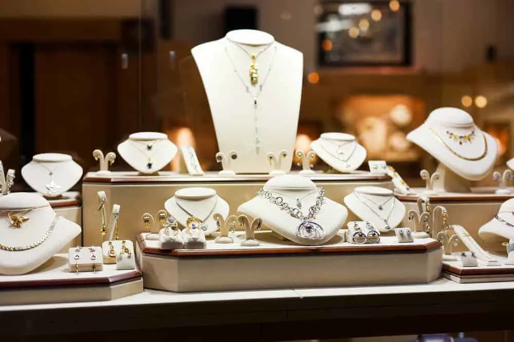

Quienes somos

Sucursal Diamante Puebla
Tienda en el centro del País, con 100 diseños exclusivos en oro y plata. Cortes realizados con los más altos estándares de calidad, cuidando la pureza de la piedra preciosa.
" frameborder="0">
Sucursal Luxury Guadalajara
Sucursal Luxury con más de 300 diseños exclusivos de la más alta calidad, técnicas combinadas para garantizar un diseño ergonómico, único y elegante.
" frameborder="0">
Sucursal Arte Veracruz
Tienda Arte Tradicional, más de 300 diseños en cuarzo con aplicaciones que resaltan la cultura del edo.
" frameborder="0">